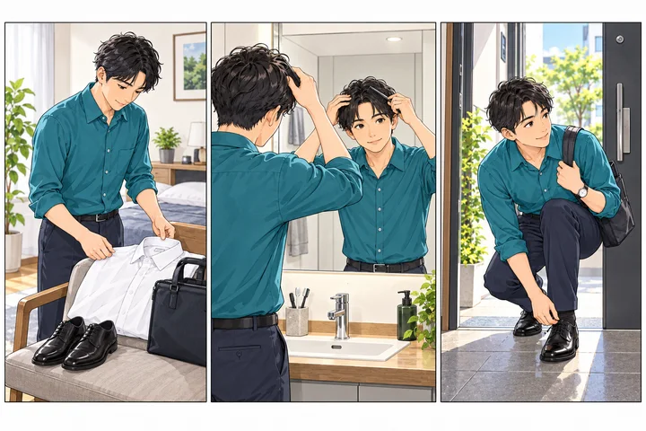

朝の身だしなみ、買い足す前の10分チェック
出かける直前、何か足りない気がして商品を買う。その前に、今あるもので整えられるところを確認してみましょう。
最初に確認したいこと
服・髪・ヒゲ・持ち物を、出かける前にひとつずつ確認。全部を一度に変えず、毎日気になることをひとつ決めると、道具やサービスも選びやすくなります。

- 01服を用意
- 02髪を整える
- 03持ち物を確認
前の晩に、服と持ち物を決める
着る予定の服を出して、シワ、汚れ、ほつれを確認します。靴やバッグも明るい場所で一度見ておくと、朝に慌てずに済みます。
新しい服を買う前に、いま持っている服の組み合わせを決めましょう。手入れが負担になる素材や、動きにくいサイズを無理に選ぶ必要はありません。
朝は、鏡の前と玄関で分けて確認
鏡の前では髪の乱れ、ヒゲの剃り残しや希望の形を確認。肌に合ういつもの手入れを基本にし、初対面の日に初めての製品をいくつも試すのは避けましょう。
玄関では襟、肩、靴、持ち物を確認。鏡で見えにくい背中や服の後ろ側は、もうひとつの鏡やスマートフォンのカメラで見る方法もあります。
買う・通うのは、困りごとが分かってから
「剃毛の時間が負担」「毎回同じ場所が剃りにくい」など、困りごとを具体的にします。まず道具の状態や使い方を確認し、それでも脱毛を検討したければ、部位・予算・通える時間を整理しましょう。
痛み、赤みなど肌の状態が気になる場合は、商品の買い足しや自己流の処置を続けず医師に相談してください。脱毛の必要性や効果は、このチェックでは判断できません。
困りごとを具体的にする例
伝え方を考えるための作成例です。実際の体験談ではありません。
出かける・相談する前に
確認状況の整理用です。安全性や医療上の適性を判定するものではありません。
自分用のメモ
メモは送信・保存されません。ページを閉じると入力は失われます。